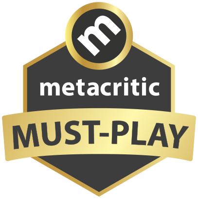

World Of Warcraft
World of Warcraft é um jogo on-line do gênero MMORPG, desenvolvido e distribuído pela produtora Blizzard Entertainment e lançado em 2004. O jogo se passa no mundo fantástico de Azeroth, introduzido no primeiro jogo da série, Warcraft: Orcs & Humans, lançado em 1994.




SoundTracks: